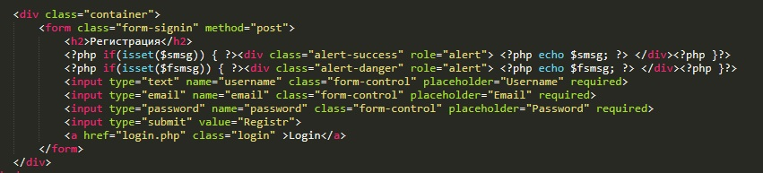
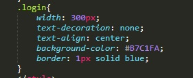
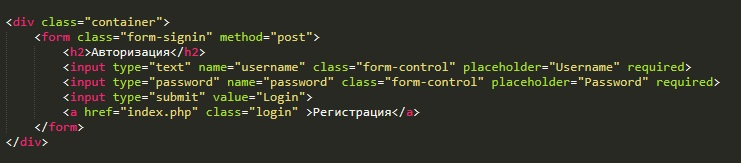
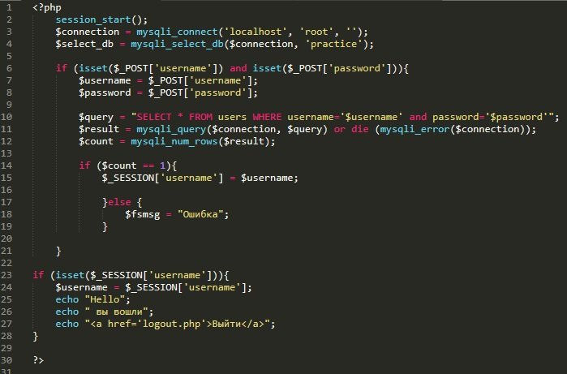
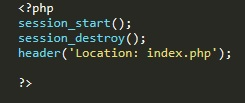

Для начала работы немного подкорректируем то, что мы сделали в прошлом примере. А именно:
в конце нашей формы добавим ссылку с надписью Login (авторизация) и добавим немного стилей для этой ссылки.
Далее создадим два файла login.php и logout.php. Первый файл - это наша страница авторизации, а второй мы будем использовать для выхода из "личного кабинета"
Рассмотрим код html файла login.php
Здесь у нас так же форма с двумя полями ввода (login и password), кнопка submit и ссылка на главную страницу index.php
Теперь рассмотрим код php
Первая строчка с текстом session_start() говорит о том, что мы открыли сессию. Для чего это надо? для того что бы пользователь находился авторизованным на сайте до тех пор пока не нажмет выйти. Эту строку обязательно надо помещать в самое начало перед html кодом, иначе будет вылезать ошибка.
Дале две строки те же что были у нас в предыдущем разборе, мы объявили две переменные в которые поместили результат функций присоединения к серверу с БД и к базе данных "Practice"
Далее тот же оператор срвнения if: если атрибуты ассоциативного массива с индексами username и password существуют то мы создаем переменные $username и $password и помещаем в них значения этих атрибутов, после чего создаем переменную $query которая помещает в себя SQL запрос на выборку данных из таблицы username где поле username будет соответсвовать значению переменной $username и значение поля password будет соответствовать значению переменной $password.
Затем мы создаем переменную result - и помещаем в нее результат функции mysqli_query с входными параметрами переменная с информацией о конекте и переменная с SQL запросом. Текст ore die означает что если $result получит значение false то выполнится код mysqli_error($connection) т.е. переменной result достанется значение сообщения об ошибке.
Далее мы создаем переменную $count. в нее мы помещаем результат функции mysqli_num_rows, эта функция возвращает количество строк с совпадением выборки. Так как у нас в базе имя пользователя стаит unique (уникальный), то значение может быть либо 1 либо 0. Так вот дальше у нас идет оператор условия: если $count равно 1 то в сессию записывается значение имени пользователя и эта информация будет храниться на сервере, иначе выдается текст с ошибкой.
В конце кода мы добавлчем раздел который нам будет показывать что пользователь авторизован. Здесь у нас оператор if. Если существует атрибут массива $_SESSION username то переменной $username присваивается начение username из сессии и выводится на экран три записи: "Hello", " вы вошли" и ссылка с указателем "Выйти". ссылка ведет к php файлу logout.php
Рассмотрим код файла logout.php
здесь мы так же открываем сессию. Затем сессию тут же закрываем (session_destroy) и с помощью редиректа header переводим пользователя на страницу index.php.